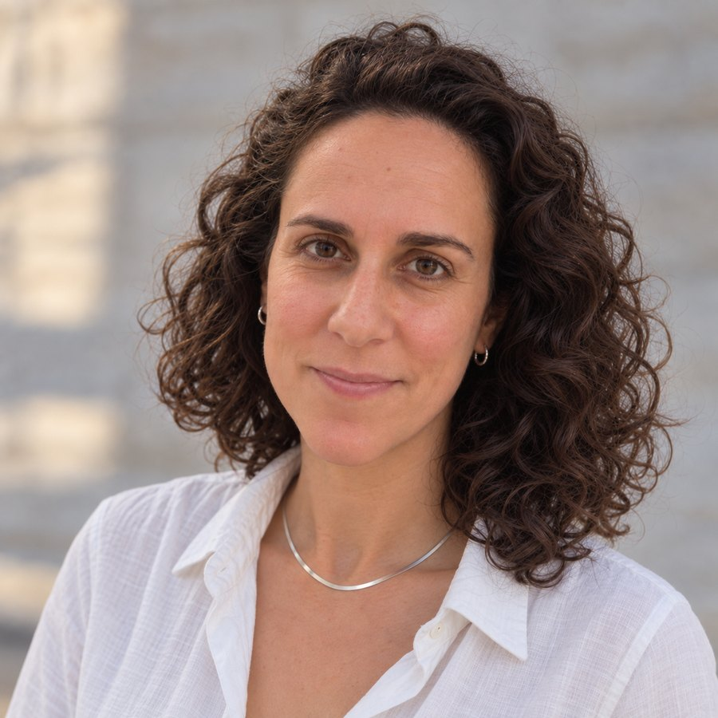

Nature-based planning for cities, landscapes and bluescapes – and the living edges where they meet. From city-wide strategy to a single native plant on site.
Copenhagen, Denmark10 years in practice · Israel & DenmarkMSc University of Copenhagen · 12/12
Michal WollnerCourses of practice
2012–16Technion BLA
2016–18LYGM · Zura Studio
2019–22MKR Architects
2021–23MSc, Copenhagen
2021–nowEco.Urbanism
Earlier coursesCurrent course
Work
Selected projects
Themes
No projects match this combination. Choose another theme or type.
About
Profile

I plan across scales – from regional corridors and city-wide strategies to the street, the park and the single plant – and hold them together as one holistic system.
My practice follows an eco-urbanist approach: ecology, water, public space, mobility and community are read as layers of one urban and landscape system, and each project is shaped by how those layers connect. Over ten years with municipalities and regional authorities in Israel, I have carried this reading from strategic frameworks and master plans through design to execution plans and supervision on site.
My MSc at the University of Copenhagen grounded the approach in research: how to combine spatial-ecological and social data into one reading of how well a place serves people and ecosystems. Today it shapes a GIS-based quality index for Tel Aviv-Jaffa’s public realm. I am based in Copenhagen and open to collaborations and roles on environmentally driven projects.
Ten years of planning across scales – from regional and city-wide strategy, through master plans and design, to detailed execution plans and supervision on site. My work follows an eco-urbanist approach: holistic planning that reads ecology, water, public space and community as one system, and carries that reading through every scale down to the plant on the ground.
Practice
2021 – now
Michal Wollner – Eco.UrbanismFounder, Israel / Denmark. An eco-urbanism practice for public authorities, regional councils and planning offices, working across scales. Strategic: the Tel Aviv-Jaffa public infrastructure framework and the Sea-to-Jordan ecological corridor (≈630 km², with LYGM). Master plans: overnight-camping sites in the Upper Galilee, the Mediterranean Forest-Neighbourhood in Lod, a regenerative quarry vision. Design and execution: stream and water-body restoration, native planting for a restored stream in Lod, the Shafdan visitor and education centre for circular water use, an educational farm in the Upper Galilee and a birdwatching park at the Timna reservoir.
2019 – 2022
MKR Architects ↗Team leader and landscape architect. From the Eilat Coastal Strip Master Plan and the Arava Delta concept to the built Eilat promenade, with site supervision after planting.
Zura Studio ↗Israeli-Spanish studio. Landscape architect. Urban tree planting systems and nature-based solutions for renewal areas.
Education
2021 – 2023
MSc Landscape Architecture (Cand.hort.arch.)University of Copenhagen. Thesis “Urban Synergy: Towards Mediterranean Eco-Urbanism”, a holistic framework of nature-based solutions and rewilding for Tel Aviv-Yaffo, grade 12/12. Danish Governmental Award for Academic Excellence.
2012 – 2016
BLA Landscape ArchitectureTechnion – Israel Institute of Technology. Magna Cum Laude. Yechiel and Yosef Segal Award for Excellent BLA Thesis (1st place). Exchange at UNSW Sydney, 2015.